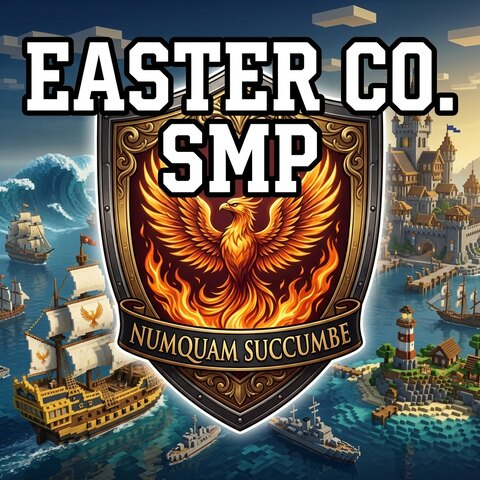

Easter Co. SMP · The Easter Isles
The Ultimate
MC Experience.
View Map
Veterans, pros, absolute beginners—better together.
We started with Matcha Flavoured and reworked the entire game from the ground up. Expect dramatically tougher survival and raid boss style encounters as you push further into the world.
The early game is rich and rewarding, with cooking, baking, and brewing at its heart. Everything you gather has a purpose, and classic resources keep their value. Casual players can stay busy and productive, helping keep the whole crew ready for the next adventure.
Bring friends. You’ll need them to get far.The endgame
Weekly Ender Dragon raids.
An MMO style experience built for a crew.
Defeat bosses for world buffs. Bosses respawn or reset each week, ready for another run.
1 elytra / weekAcross the entire server. Enjoy the End time and time again—but make that one count.
The first player to obtain an elytra wins the best player house on the spawn island.
Law, order & a little anarchy
Griefing is encouraged.
Justice pays better.
We’d rather build consequences into the game than write a rule for every bit of mischief. Our law & order and crime & punishment mechanics make causing trouble fun—and hunting down the culprits even more rewarding.
- Royal Navy Marine
- Spread the Empire’s influence. Bring order and stability to the Isles.
- Pirate raider
- Join a notorious crew, sail the high seas, and make a name worth fearing.
- Bounty hunter
- Go it alone. Track down those very pirates—and make justice your business.